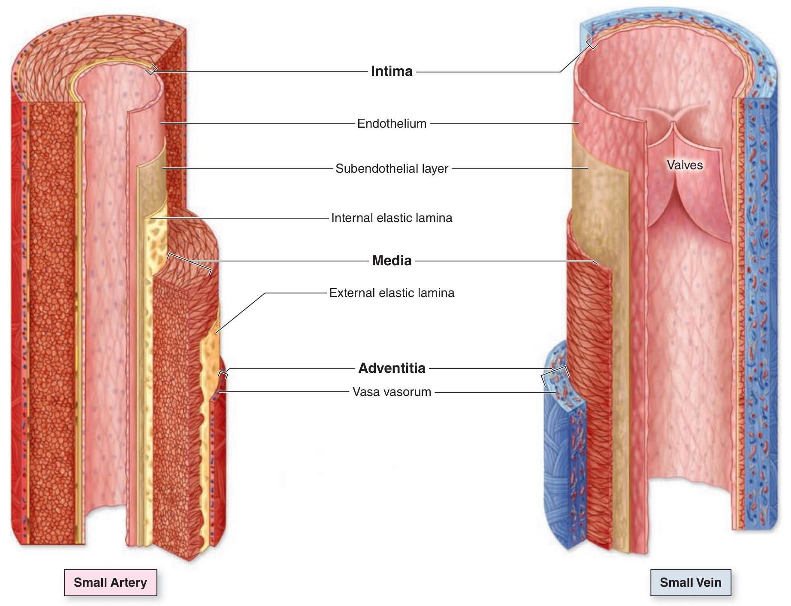
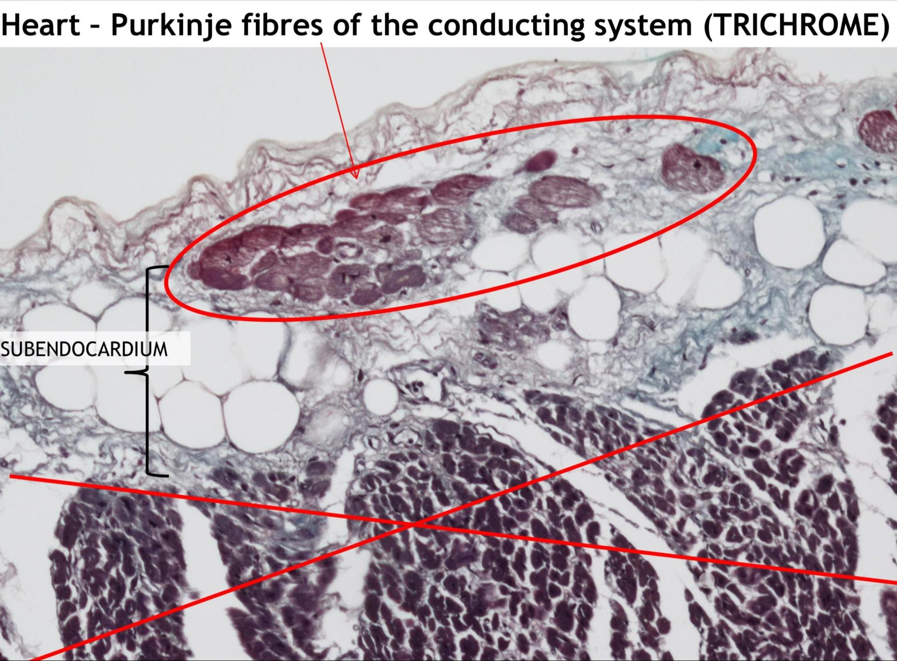

Circulatory System
The Heart - Structure and Function
Study Notes - Circulatory System
CIRCULATORY SYSTEM
The circulatory system consists of:
- Heart
- Vessels
- Arteries
- Veins
- Capillaries
BLOOD VESSELS
All blood vessels have 3 layers:
- Tunica intima
- Tunica media
- Tunica adventitia
Tunica Intima
- Innermost layer (direct contact with blood)
- Composed of:
- Single layer of squamous endothelial cells arranged in longitudinal direction with basal lamina
- Subendothelial layer: loose collagenous connective tissue + smooth muscle cells + elastic and reticular fibres
Function of endothelium:
- Nonthrombogenic surface
- Blood will not clot
- Secretes agents that will control local blood clot formation
- Vascular tone and blood flow
- Stimulate smooth muscle contraction
- Inflammation and local immune response
- Can induce WBC to stop and undergo transendothelial migration to sites of injury or infection (mainly in post capillary venules)
- Secrete growth factors
- Stimulate formation of vascular system
Tunica Media
- Middle layer
- Composed of:
- Concentric layers of smooth muscle cells
- Elastic, collagen and reticular fibres
- Elements of ground substance (produced by smooth muscle cells)
- According to amount and content of tunica media we can distinguish different types of vessels
Tunica Adventitia
- Outer layer
- Composed of:
- Longitudinally arranged collagen and elastic fibres
- Adipose cells
- Smooth muscle cells (veins)
Vasa Vasorum
- Smaller vessels present within adventitia of vessels
- Nourish the vessels
- Present more in veins than arteries
- Veins carry deoxygenated blood which doesn't contain adequate nourishment for the walls of the veins
ARTERIES VS VEINS
Presence or absence of internal / external elastic membrane
- Only present in arteries
Internal elastic lamina
- Layer of elastic fibres at the border between tunica intima and tunica media
- (Part of tunica intima)
External elastic lamina
- Layer of elastic fibres at the border between tunica media and tunica adventitia
Lumen shape
- Arteries: regular lumen
- Veins: irregular lumen
Thickest layer
- Arteries: tunica media
- Veins: tunica adventitia
Presence or absence of valves
- Arteries: no valves
- Veins: valves - foldings of tunica intima
Vasa vasorum
- More in veins than arteries (deoxygenated blood)

ARTERIES
Arteries can be divided according to the size and characteristics of tunica media
Elastic Arteries (Large)
- Aorta / pulmonary arteries and their largest branches
- Carry blood to smaller arteries
- Features:
Tunica Intima
- Subendothelial layer: large amount of smooth muscle cells
- Internal elastic membrane: not defined
Tunica Media
- Thickest layer
- Large amount of elastic fibres forming
- Creation of diastolic pressure
- Smooth muscle cells: capable of producing substances that fibroblast would usually produce
- Ground substance
- External elastic membrane: not well defined
Tunica Adventitia
- Thinner than tunica media
- Vasa + nervi vasorum
Muscular Arteries (Medium)
- Most named arteries in body
- Distribute blood to organs
- Features:
Tunica Intima
- Internal elastic membrane: well defined
- Subendothelial layer: thick
Tunica Media
- Many concentric layers of smooth muscle cells with much less elastic fibres
- External elastic membrane: developed only in larger muscular arteries
Tunica Adventitia
- Thinner than tunica media
- Vasa + nervi vasorum
Small Arteries
- Same as muscular arteries but tunica media has thinner layer of smooth muscle cells
- No vasa vasorum
- No external elastic membrane
Arterioles
- Smallest arteries branches
- Non-collapsed lumen
Tunica Intima
- Endothelium: touches muscle cells of tunica media in some places (penetrated through basal lamina)
- Subendothelial layer: very thin
Tunica Media
- Internal elastic membrane: only in larger arterioles
- Smooth muscle layer: 1-5 layers thick (only one layer in small arterioles)
- External elastic membrane: absent
Tunica Adventitia
- Very thin
Metarteriole / Precapillary
- Terminal branches of arterioles
- Non-collapsed lumen
Tunica Intima
- Endothelium
Tunica Media
- Few smooth muscle cells
- Multiplication of smooth muscle cells present in the pre capillary sphincter (regulates blood flow into the capillary)
Tunica Adventitia
- Very thin
CAPILLARIES
- Thinnest section of the blood stream
- Facilitate substance exchange between blood and tissues
- Function in groups called capillary beds
- Size and shape depends on the metabolic activity of the tissue
- Consist of:
- Endothelium (no Subendothelial layer)
- Basal lamina
- Pericytes
- Elongated cells with many protrusions around the vessel
- Contractile ability due to presence of actin and myosin
- Line the capillaries and correspond to smooth muscle in the media of larger vessels
Based on the structural differences of capillaries we distinguish 4 types
Structural differences are the basis of the permeability differences
Continuous / Somatic Capillaries
- Continuous endothelium
- No fenestrations or pores
- Basal lamina is continuous
- Brain / skeletal muscle / lungs
Fenestrated Capillaries
- Endothelial cells with fenestrations
- Fenestrations covered by a membrane: diaphragm
- Basal lamina is continuous
- Organs with quick substance exchange: endocrine glands / intestines
Capillary with Pores
- Endothelial cells with fenestrations and no diaphragm
- True pores
- Basal lamina is continuous
- Only in renal glomeruli
Sinusoidal Capillaries
- Larger perforations without diaphragm
- Discontinuous basal lamina
- Much larger diameter
- Slows down blood flow allowing for maximal exchange between blood and tissue
- Liver / spleen / bone marrow
VEINS
- Low pressure system
- Contain valves
- Wall consists of same 3 layers but tunica adventitia is most predominant
Post Capillary and Collecting Venules
- Same as capillary but wider lumen and more pericytes
Muscular Venules
Tunica Intima
- Endothelial cells
- Pericytes
- No Subendothelial layer
Tunica Media
- 1-2 layers of smooth muscle cells
Tunica Adventitia
- Loose connective tissue
Small and Medium Veins
Tunica Intima
- One layer endothelial cells
- Very thin Subendothelial layer
Tunica Media
- Circularly arranged smooth muscle layer
- Collagen + elastic + reticular fibres
- IEL not developed
Tunica Adventitia
- Widest layer
- Longitudinally arranged smooth muscle layer
- EEL not developed
- Vasa vasorum
- Contain valves
Large Veins
Tunica Intima
- One layer of endothelial cells
- Subendothelial layer: wide with smooth muscle cells
Tunica Media
- Thin layer of circular smooth muscle cells
Tunica Adventitia
- Most developed
- Longitudinally arranged muscle bundles (more muscle than media)
- Collagen + elastic + reticular fibres
- Vasa + nervi vasorum
- Valves

THE HEART
- Located in the pericardium - double layered sack
- Composed of 3 layers
Endocardium
- One layer of endothelial cells
- Subendothelial layer: loose connective tissue, elastic, collagen, smooth muscle cells
- Subendocardial layer:
- Closest to myocardium
- Connective tissue
- Purkinje fibres: heart's conducting system
- Specialised cardiomyocytes
- Larger than cardiomyocytes
- Paler than cardiomyocytes due to higher amount of glycogen

Myocardium
- Cardiomyocytes
- Thickest part of the heart wall
- Atria: 2 layers of heart muscle
- Ventricles: 3 layers of heart muscle
- Fibres arranged spirally around each heart chamber: pump blood
- Contain large amount of vessels
Epicardium
- Visceral layer of the serous part of the pericardium
- Subepicardial layer
- Above myocardium
- Thick layer of adipose tissue which cushions the heart
- Contains coronary arteries and veins
- Lamina propria
- Thin layer of loose collagenous connective tissue
- Contains nerves and capillaries
- Mesothelium
- Last layer
- Simple squamous lining (mesothelial lining)
Heart Chambers
Atria
- Thin-walled chambers that receive blood
- Right atrium receives deoxygenated blood from systemic circulation
- Left atrium receives oxygenated blood from pulmonary circulation
- Contain pectinate muscles for increased surface area
Ventricles
- Thick-walled chambers that pump blood
- Right ventricle pumps blood to pulmonary circulation
- Left ventricle pumps blood to systemic circulation
- Contain trabeculae carneae and papillary muscles
Heart Valves
Atrioventricular Valves
- Tricuspid Valve: Between right atrium and ventricle (3 cusps)
- Mitral (Bicuspid) Valve: Between left atrium and ventricle (2 cusps)
- Supported by chordae tendineae and papillary muscles
Semilunar Valves
- Pulmonary Valve: Between right ventricle and pulmonary artery
- Aortic Valve: Between left ventricle and aorta
- Each has three crescent-shaped cusps
Cardiac Conduction System
- Sinoatrial (SA) Node: Natural pacemaker in right atrial wall
- Atrioventricular (AV) Node: Delays impulse transmission to ventricles
- Bundle of His: Conducts impulses from AV node to ventricles
- Purkinje Fibers: Specialized cardiac muscle cells for rapid conduction
Blood Composition
Plasma (55%)
- Water, proteins (albumin, globulins, fibrinogen), electrolytes
- Nutrients, waste products, hormones, gases
Formed Elements (45%)
- Red Blood Cells (Erythrocytes): Oxygen transport
- White Blood Cells (Leukocytes): Immune defense
- Platelets (Thrombocytes): Blood clotting
Circulation Pathways
Pulmonary Circulation
- Right ventricle → pulmonary arteries → lungs → pulmonary veins → left atrium
- Oxygenates blood and removes carbon dioxide
Systemic Circulation
- Left ventricle → aorta → body tissues → vena cavae → right atrium
- Delivers oxygen and nutrients to tissues
Cardiac Cycle
- Diastole: Relaxation phase, chambers fill with blood
- Systole: Contraction phase, chambers pump blood
- Coordinated by electrical conduction system
- Produces characteristic heart sounds (S1, S2)
Blood Pressure Regulation
- Cardiac Output: Heart rate × stroke volume
- Peripheral Resistance: Controlled by arteriolar smooth muscle
- Blood Volume: Regulated by kidneys and hormones
- Vessel Elasticity: Maintains pressure during diastole
Clinical Correlations
- Coronary Artery Disease: Atherosclerosis affecting heart muscle perfusion
- Heart Failure: Impaired cardiac pumping function
- Arrhythmias: Disorders of cardiac electrical conduction
- Hypertension: Elevated blood pressure affecting vessel structure
- Atherosclerosis: Arterial wall changes affecting circulation
Study Tips
- Understand the relationship between structure and function in each component
- Practice identifying different vessel types under microscopy
- Learn the cardiac cycle and relate it to valve function
- Connect histological features to physiological processes
- Remember the differences between pulmonary and systemic circulation
- Study blood composition and the role of each component
- Focus on the three-layer structure of blood vessels and how it varies
- Understand capillary types and their functional significance
- Learn to distinguish arteries from veins histologically
- Connect the heart's layers to their specific functions
Key Distinctions to Remember
- Vessel layers: Tunica intima (endothelium), media (smooth muscle), adventitia (connective tissue)
- Artery vs Vein: Arteries have thicker media, regular lumen, elastic laminae; veins have thicker adventitia, irregular lumen, valves
- Capillary types: Continuous (brain, muscle), fenestrated (kidney, endocrine), sinusoidal (liver, spleen)
- Heart layers: Endocardium (inner lining), myocardium (muscle), epicardium (outer covering)
- Conduction system: SA node → AV node → Bundle of His → Purkinje fibers